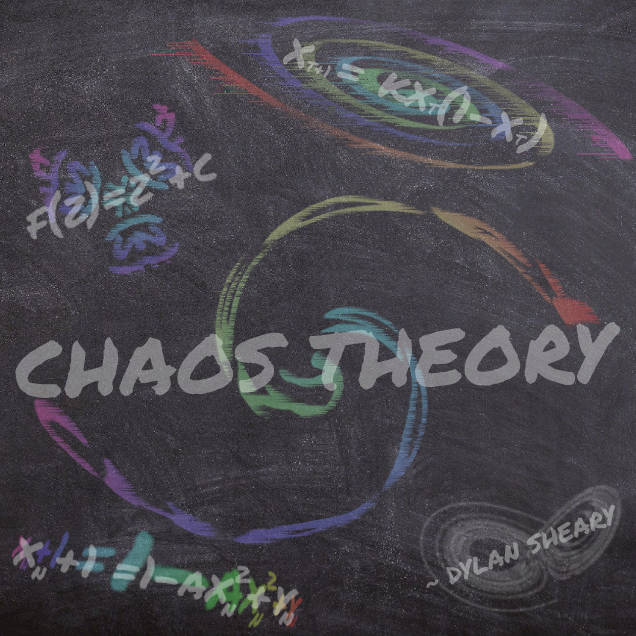

Since I was about seven, I’ve not only played the piano but grown an understanding of what makes great music spectacular. The textures, the mastery, the inspiration it can evoke, all build towards an art form that can easily be as impactful as it is beautiful, and nothing has put that knowledge to the test better than my attempts at composition over the past two years.
The following four songs are the fruits of those efforts, and I take a lot of pride in each and every one of them today.
Enjoy.
The following four songs are the fruits of those efforts, and I take a lot of pride in each and every one of them today.
Enjoy.

Stranger
Once upon NZ’s third lockdown, I decided to put my time towards something with a little more soul than another thirty hours on some game or the homework I was actually assigned: a melody, entirely based off of a smooth, upright bass riff that plays throughout the entire piece I had come up with as an alternative take on another song’s main riff. ‘Stranger’ is the most Jazz-themed song out of my entire portfolio, even apparently particularly reminiscent to Estonian jazz. Nonetheless, It’s one of the more inspiring tunes in my playlist, so enjoy seeing where it takes you.

Starlit Odyssey
Starlit Odyssey was the first project I began, only to spend over a year on not only mastering the emotive effect this song heralds but learning how to use Garageband and that I had an aptitude for it. Now, it represents how I found my talents at music writing.
To this day, this piece is easily the most complicated composition I’ve ever attempted, and with themes and methods as advanced as it turned out with, (C Minor phrygian mode ending remix, to name one example) the effort was well worth it for my most classical piece to date.

Starlit Harmony
Simplicity is a tool, but never your entire potential. That idiom was more important to my progress in one track than any other: ‘Starlit Harmony’, a spiritual sequel to Starlit Odyssey with a much calmer, spacier vibe I never got to incorporate into the original.
Though all of this merely began with a simple rising chord harmony, played with a signature combo of mine between a Soft Bells Synth and the Grand Piano, you’re in for a few surprises with this one.

Sleeping Pills
One of my more recently completed projects, Sleeping Pills, was created in much the same way as Starlit Harmony, by taking one simple melody aspect to use as a base for the rest of the track as it not only grew but became inspiringly thematic. In this song’s case, it was merely three notes on a harp changing keys as piano, synth bells, and a music-box-like vibraphone joined it, only for heavy strings to replace the light effect with an intense, grand vibe, turning the simple, sleepy track powerful and bold, return to its original style again.Contrast is key.

Starlit Breach
There's little tragedy quite as simply harrowing as losing what you make art with. As my luck would have it, both my synthesizer and macbook broke simultaneously. I didn't let the concurrent lockdown go to waste, however, and turned to my electric piano for, if nothing else, practice. And so, once a day, I'd spend 5 minutes on something new. Simple, improvised, anything. Over the course of the TEN FULL WEEKS it took for my tech to be repaired, my style evolved. Why search for meticulous musical patterns when I could, simply, improvise? And so, with my very next project when I got my tech back, I tried something new. Something stylish, something heavy. Enjoy.

Starlit Legacy
Considering the circumstances of my tech breaking down for ten weeks, losing the file for twelve weeks, my musical style shifting, and completely forgetting my original vision past the one minute mark, I think Starlit Legacy turned out fantastically. Don't let that lower your hopes one bit, however, as this one was actually my cleanest take on my signature synthstyle/classical fusion, and one of my most elaborate pieces to date.
After Starlit Breach, I still felt enthralled with the potential of the new synth leads I had been experimenting with, and wanted something fresh to test out some brand new bass speakers with. And so, Starlit Legacy began again.

The rest, particularly its beginning, was loosely inspired by It's Closing In from Borderline Forever (Not as much by imagining a remix or an actual idea from the song but... playing along to it in my head and finding something new). This one's been a long time coming and I couldn't be more glad it turned out so great.
CHAOS THEORY
Though SL Odyssey is my oldest project, and Stranger was the first song I finished, one idea predated all others by, if my memory serves me right, about seven years. I can only imagine it stuck around in my unreliable-at-best brain by being completely and utterly unreasonably good for an idea put together by a twelve year old.
The rest, particularly its beginning, was loosely inspired by It's Closing In from Borderline Forever (Not as much by imagining a remix or an actual idea from the song but... playing along to it in my head and finding something new). This one's been a long time coming and I couldn't be more glad it turned out so great.

Starlit Elysium
In my no-end-in-sight search to find just what song genre really suits my composition best, I turned back to an older style, not unlike what I established in SL Odyssey, with a new idea and a lighter twist, in the form of 'Starlit Elysium'
(A particularly fitting name considering I began this project just as I finished Year 13).
Of all of my songs, SL Elysium is the closest to a... fanale as I've gotten, and, one day, when this 'playlist' of songs with Starlit in their titles is finished, it'll be the perfect way to end things off.

Starlit Summit
Experiments experiments experiments.
You never know just what a song's gonna end up like from its beginning, and I'd never have guessed this seriously old and dramatic idea that had been rotting in my voice recordings app for about a year would end up being my first deep dive into surreal rock.
See where this one's evolution takes you, and what ideas you can hear evolved from other songs I've worked on, it's been a pretty good way to finish off a year of a lot of musical progress.

Trajectory Burn
For as good of a tool as Garage Band has been to me, I've never been able to help but wonder what other tools are out there that I'm missing out on, and, interestingly, practically all of my musical inspirations compose with the same program: FL Studio.
And so, what just might be the next evolutionary step for my composition talents became clear.
This is my most complete early experiment with FL Studio and, for what it is, a pretty catchy little tune: "Trajectory Burn"